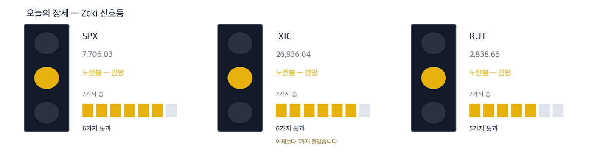

안내 — 발송 장애로 9월 24일 판 뒤로 미국 다이제스트가 나가지 못했습니다. 지금은 복구했습니다. 기다리게 해 드려 죄송합니다.
미 국채 금리 19년 만의 최고… 정유주 강세·반도체 거인의 현금 투입
2026년 9월 29일 · 값은 9월 28일 종가 기준입니다
신문에서 저희가 갖고 있지 않은 회사를 찾아, 왜 값을 할 수 있는지 숫자로 적습니다.
다우 51,482 -0.67% | 나스닥 종합 26,820 -0.92% | S&P 500 7,684 -0.77% | 러셀 2000 2,818 -0.69% | 10년 국채 5.24% +0.06%p | 제키 신호등 노란불 |

대기 — 신호등이 뜻하는 자세입니다.
초록불은 매수 우위, 노란불은 관망, 빨간불은 매수 자제입니다. 칸은 7가지 조건 중 몇 가지를 만족하는지이고, 많을수록 오르는 종목이 넓게 퍼져 있습니다. 9월 28일 종가로 계산한 신호등입니다. S&P 500과 나스닥 종합은 6가지를 만족해 노란불, 러셀 2000은 4가지로 빨간불입니다. 러셀 2000은 하루 전보다 1가지 줄었습니다. 세 지수를 합한 신호등은 노란불입니다.
간밤 뉴욕에서 S&P 500은 0.77% 내려 7,684로 마쳤습니다. 나스닥 종합은 0.92%, 다우는 0.67%, 러셀 2000은 0.69% 내렸습니다. 미국 10년물 국채 금리는 5.24%로 19년 만에 가장 높습니다. 유가와 금리가 함께 오르면서 주식을 눌렀습니다. 브렌트유는 0.92% 올라 배럴당 105.3달러였습니다. (월스트리트저널)
지금 할 일
개장 전에 정해 두실 3가지입니다.
오늘 할 일 셋
1. 장기 금리가 19년 만의 최고입니다. 값이 비싼 성장주를 새로 담는다면 크기를 줄이십시오.
트럼프 행정부의 정책이 오히려 금리와 물가를 끌어올려 재정 약속이 흔들린다는 분석이 1면에 실렸습니다. 월가 전문가 6명의 진단도 엇갈렸습니다. 블랙록의 릭 리더는 채권 매수 기회로 봤고, 레이 달리오는 신중론을 폈습니다. (금융면·1면, 월스트리트저널)
2. 호르무즈 해협을 막던 이란의 힘이 약해지고 있습니다. 새로 볼 곳은 정유사입니다.
중동 원유 수출이 다시 늘고, 사우디는 드론 피해를 고친 동서 송유관으로 수출을 재개했습니다. 원유가 다시 흐르면 원가가 내려가는 쪽은 휘발유·경유를 만드는 정유사입니다. 발레로 에너지는 제키 강도 95입니다. (중동 기사, 월스트리트저널 1면)
3. 반도체 두 거인이 현금을 풀었습니다. 값이 버티는 쪽은 AMD입니다.
AMD는 인공지능 연구 회사 월드랩스를 약 82억 달러에 주식으로 사들입니다. 엔비디아 이사회는 자사주 매입 1,500억 달러를 더 승인했고, 한도가 모두 2,350억 달러가 됐습니다. AMD의 제키 강도는 97로 오늘 실은 종목 가운데 가장 높습니다. (월스트리트저널 1면·비즈니스면)
그래서 어떻게 하나: 오늘 새로 담는다면 발레로 에너지와 AMD입니다. 크기는 평소보다 작게 잡으십시오. 금요일 고용 보고서 전까지 금리가 내려오지 않으면 소형주는 서두르지 않으셔도 됩니다.
먼저, 이번 주 경제
숫자 하나 — 미국 10년물 국채 금리 5.24%입니다. 19년 만에 가장 높습니다. 아래는 이번 주 날짜 3개입니다.
| 날짜 | 무엇을 보는가 | 시장에 어떤 영향 |
|---|
| 9월 30일(수) | 8월 개인소비지출(PCE) 물가 · 2분기 GDP 확정치 | 물가가 높게 나오면 금리가 더 오르고 성장주가 먼저 흔들립니다 |
| 10월 1일(목) | ISM 제조업 지수 | 경기가 식지 않았다는 숫자가 나오면 금리 인상 전망이 굳어집니다 |
| 10월 2일(금) | 9월 고용 보고서 | 이번 주 가장 큰 발표입니다. 금리·달러·주식이 함께 움직입니다 |
테마 1 — 다시 흐르는 원유와 정유사
이란이 호르무즈 해협에 걸었던 압박이 약해지고 있습니다. 미 해군과 걸프 산유국이 공격을 더 잘 피하게 됐고, 중동 원유 수출이 다시 늘었습니다. 사우디는 드론 공격으로 부서진 동서 송유관을 고쳐 수출을 재개했습니다. 다만 이란이 군사적으로 맞설 위험은 남아 있습니다. 월요일 브렌트유는 배럴당 105.3달러로 여전히 높습니다. 원유를 사서 휘발유와 경유를 만드는 정유사는 유가가 먼저 내려가면 이익이 커집니다. (월스트리트저널 1면)
| 테마 1 — 다시 흐르는 원유와 정유사 | | 발레로 에너지(VLO) | 근거 확실 |
| 종가 | 당일 | 한 주 | 20거래일 |
|---|
| 389.57달러 | +0.62% | -0.94% | +10.56% |
| 3개월 | 제키 강도 | 제키 자금 | 고점 대비 |
|---|
| +46.28% | 95 | A | -7.0% |
| 누가 | 발레로 에너지, 미국 최대 독립 정유사 가운데 하나입니다. | | 무엇을 | 0.62% 올라 389.57달러에 마쳤습니다. 지수가 내린 날 올랐습니다. | | 언제 | 9월 28일 월요일입니다. | | 어디서 | 뉴욕증권거래소 상장 종목입니다. | | 왜 | 원유 공급이 돌아오면 원가가 먼저 내려가 정제 이익이 커지기 때문입니다. | | 어떻게 | 하루 거래량이 50일 평균의 1.16배로 늘며 올랐습니다. |
판단 — 저희 기준 4가지를 모두 넘었습니다. 제키 강도 95, 3개월과 2주 제키 자금이 모두 A입니다. 3개월 동안 46.28% 올랐습니다. 확인 신호 — 9월 28일 고가 395.85달러를 넘어 마감하면서 하루 거래량이 50일 평균 307만 주를 넘는 것입니다. 철회 기준 — 21일 지수 이동평균 379.53달러 아래로 마감하는 것입니다. |
| 테마 1 — 다시 흐르는 원유와 정유사 | | 필립스 66(PSX) | 근거 있음 |
| 종가 | 당일 | 한 주 | 20거래일 |
|---|
| 253.55달러 | -0.86% | -3.13% | +3.91% |
| 3개월 | 제키 강도 | 제키 자금 | 고점 대비 |
|---|
| +45.68% | 92 | B | -8.5% |
| 누가 | 필립스 66, 정유와 화학·파이프라인 사업을 함께 하는 회사입니다. | | 무엇을 | 0.86% 내려 253.55달러에 마쳤습니다. | | 언제 | 9월 28일 월요일입니다. | | 어디서 | 뉴욕증권거래소 상장 종목입니다. | | 왜 | 발레로와 같은 이유로 유가가 먼저 내려가면 정제 이익이 커집니다. | | 어떻게 | 3개월 동안 45.68% 올랐지만 최근 2주 제키 자금은 E로 떨어졌습니다. |
판단 — 저희 기준 4가지 가운데 3가지를 넘었습니다. 제키 강도 92입니다. 최근 2주 제키 자금이 E로 내려간 것이 걸립니다. 확인 신호 — 21일 지수 이동평균 254.88달러 위로 다시 올라 마감하는 것입니다. 철회 기준 — 50일 이동평균 236.71달러 아래로 마감하는 것입니다. |
테마 2 — 반도체 거인의 현금 투입
AMD가 인공지능 연구 회사 월드랩스를 약 82억 달러에 사들입니다. 전액 주식으로 치릅니다. 월드랩스는 로봇처럼 현실 세계에서 움직이는 인공지능을 연구합니다. 엔비디아 이사회는 자사주 매입 1,500억 달러를 더 승인했습니다. 한도는 모두 2,350억 달러입니다. 엔비디아는 인공지능 에이전트를 시험하고 감시하는 소프트웨어도 내놨습니다. (비즈니스면·1면, 월스트리트저널)
| 테마 2 — 반도체 거인의 현금 투입 | | AMD | 근거 확실 |
| 종가 | 당일 | 한 주 | 20거래일 |
|---|
| 607.87달러 | -3.61% | -1.24% | +30.56% |
| 3개월 | 제키 강도 | 제키 자금 | 고점 대비 |
|---|
| +12.67% | 97 | A | -4.9% |
| 누가 | AMD, 서버와 PC용 프로세서와 인공지능 가속기를 만드는 회사입니다. | | 무엇을 | 월드랩스 인수를 밝힌 날 3.61% 내려 607.87달러에 마쳤습니다. | | 언제 | 9월 28일 월요일입니다. | | 어디서 | 나스닥 상장 종목입니다. | | 왜 | 칩만 파는 회사에서 로봇용 인공지능까지 파는 회사로 넓히려는 것입니다. | | 어떻게 | 하락한 날 거래량은 50일 평균의 0.92배로 평소보다 적었습니다. |
판단 — 저희 기준 4가지를 모두 넘었습니다. 제키 강도 97, 20거래일 동안 30.56% 올랐습니다. 하루 하락은 거래가 적은 채 나왔습니다. 확인 신호 — 9월 25일 종가 630.63달러를 되찾아 마감하는 것입니다. 철회 기준 — 21일 지수 이동평균 553.43달러 아래로 마감하는 것입니다. |
| 테마 2 — 반도체 거인의 현금 투입 | | 엔비디아(NVDA) | 확인 필요 |
| 종가 | 당일 | 한 주 | 20거래일 |
|---|
| 228.86달러 | +1.68% | +0.65% | +5.20% |
| 3개월 | 제키 강도 | 제키 자금 | 고점 대비 |
|---|
| +17.38% | 76 | A | -3.2% |
| 누가 | 엔비디아, 인공지능 반도체 시장의 1위 회사입니다. | | 무엇을 | 자사주 매입 확대를 밝힌 뒤 1.68% 올라 228.86달러에 마쳤습니다. | | 언제 | 9월 28일 월요일입니다. | | 어디서 | 나스닥 상장 종목입니다. | | 왜 | 회사가 제 주식을 사들이면 시장에 도는 주식이 줄어듭니다. | | 어떻게 | 하루 거래량이 50일 평균의 1.16배로 늘며 올랐습니다. |
판단 — 4가지 가운데 3가지를 넘었지만 제키 강도가 76으로 기준 90에 못 미칩니다. 그래서 확인 필요입니다. 확인 신호 — 1년 최고가 236.54달러를 넘어 마감하는 것입니다. 철회 기준 — 21일 지수 이동평균 222.02달러 아래로 마감하는 것입니다. |
오늘 제외한 테마 — 보잉 737 맥스 인증 지연
미 연방항공청(FAA)이 새 소프트웨어 결함을 이유로 보잉 737 맥스 최신 기종의 인증을 미뤘습니다. 보잉은 28일 6.91% 내렸고 거래량은 50일 평균의 2.93배였습니다. 제키 강도는 20이고 1년 최고가보다 27.5% 낮습니다. 기사는 컸지만 값은 아래로 향했습니다. 그래서 이 테마는 오늘 제외합니다. (월스트리트저널 세계 소식 요약)
같은 이유로 뺀 것 하나 더
항공기 정비 회사 AAR은 베인캐피털이 가진 MRO 홀딩스의 과반 지분을 18억 달러에 사들입니다. 그러나 주가는 28일 0.88% 내렸고 20거래일 동안 13.59% 떨어졌습니다. 제키 강도는 58이고 추세 지표가 0 아래입니다. 기사는 컸는데 값은 따라오지 않았습니다. (월스트리트저널 비즈니스면)
오늘 찾은 것, 한 장으로
오늘 사야 한다면 — 근거 확실 2곳: 발레로 에너지(VLO), AMD
| 종목 | ①20거래일
상승 | ②강도
90↑ | ③자금
3개월 A~B | ④2주째
유지 | 충족 | 근거의 무게 |
|---|
| 발레로 에너지(VLO) | O | O | O | O | 4/4 | 근거 확실 |
| 필립스 66(PSX) | O | O | O | X | 3/4 | 근거 있음 |
| AMD | O | O | O | O | 4/4 | 근거 확실 |
| 엔비디아(NVDA) | O | X | O | O | 3/4 | 확인 필요 |
네 칸은 ①20거래일 동안 올랐는가 ②제키 강도가 90 이상인가입니다. 이어서 ③3개월 제키 자금이 A 또는 B인가 ④최근 2주에 값이 약해지지 않았는가입니다. O의 개수가 근거의 무게를 정합니다.
그래서 어떻게 하나: 근거 확실은 발레로 에너지와 AMD 두 곳입니다. 필립스 66은 2주 제키 자금이 E로 내려 한 단계 아래, 엔비디아는 강도가 모자라 확인이 필요합니다.
매집과 분산 — 돈은 어디로 갔나
미국에는 외국인·기관이 몇 주를 샀는지 알려 주는 일별 공시가 없습니다. 아래 등급은 오른 날과 내린 날의 거래량을 견줘 되짚은 추정이지 집계가 아닙니다. 9월 28일 종가까지의 자료입니다.
수급과 거래량을 한 줄로 | 종목 | 수급 3개월→2주 | 거래량 | 어떻게 읽나 |
|---|
| Phillips 66 PSX | B → E ↓ | 1.27배 | 주의 — 등급이 내리는데 물량이 늘었습니다 | | MGM Resorts International MGM | E → E = | 4.02배 | 관심✗ — 3개월도 2주도 사는 쪽입니다 | | McDonald's Corporation MCD | E → E = | 1.76배 | 관심✗ — 3개월도 2주도 사는 쪽입니다 | | Everpure Inc P | A → A = | 1.45배 | 관심✓ — 3개월도 2주도 사는 쪽입니다 | | Proto Labs PRLB | A → A = | 1.42배 | 관심✓ — 3개월도 2주도 사는 쪽입니다 | | Aon plc AON | E → E = | 1.41배 | 관심✗ — 3개월도 2주도 사는 쪽입니다 | | Viavi Solutions VIAV | A → A = | 1.29배 | 관심✗ — 3개월도 2주도 사는 쪽입니다 | | Credo Technology Group Holding CRDO | C → A ↑ | 1.28배 | 관심✗ — 매수세가 세게 붙었습니다 |
거래량은 최근 5거래일 평균 ÷ 50일 평균입니다. ✓ 는 저희 진입 규칙(MACD 라인 > 0)도 통과했다는 뜻이고, ✗ 는 수급은 좋지만 규칙 밖이라는 뜻입니다. 이 읽는 법이 맞는지는 지금 세고 있습니다. |
찾아낸 종목에 자금이 따라왔는가
기사와 값이 맞아도 자금은 따로 봅니다. 아래 표는 9월 28일 하루 거래량이 50일 평균을 넘었는지를 답합니다.
| 종목 | 50일 평균을 넘었나 | 제키 자금 3개월 → 2주 | 어떻게 읽나 |
|---|
| 발레로 에너지(VLO) | 1.16배 ✓ 넘었습니다 | A → A | 관심 — 값도 거래도 같은 쪽입니다 |
| 필립스 66(PSX) | 1.22배 ✓ 넘었습니다 | B → E ↓ | 주의 — 등급이 내리는데 물량이 늘었습니다 |
| AMD | 0.92배 ✗ 못 넘었습니다 | A → A | 관망 — 거래가 적은 채 값이 내렸습니다 |
| 엔비디아(NVDA) | 1.16배 ✓ 넘었습니다 | A → A | 관심 — 값도 거래도 같은 쪽입니다 |
칸의 말은 저희의 매매를 뜻하지 않습니다. 관심은 값과 거래가 같은 쪽이라는 뜻이고, 주의는 등급이 내리는데 거래가 몰렸다는 뜻이며, 관망은 값이 거래 없이 움직였다는 뜻입니다.
실린 종목은 어떻게 됐나
9/09부터 쌓은 누계입니다. 지금까지 81종목을 실었고, 그중 5거래일이 찬 78종목이 아래 표에 있습니다. 나머지 3종목은 9월 22일~9월 29일에 실어 5거래일이 아직 되지 않았습니다. 5거래일은 한 주입니다 — 하루 등락은 흔들림이 커서 기사가 맞았는지 가릴 수 없고, 한 주가 지나야 지수와 견줄 수 있습니다. 차는 대로 여기에 더해집니다. 빼는 것이 아닙니다. 기준은 실린 날 종가, 비교는 같은 기간 S&P 500. 이 표의 값은 미국 9월 28일 종가까지 반영했습니다.
무엇인가. 저희가 신문 기사에서 찾아 다이제스트에 이름을 올린 회사들을 그날 종가로 적어 두고, 그 뒤 값이 어떻게 됐는지 세는 표입니다. 근거가 굳은 정도에 따라 나눠 셉니다.
무엇을 위한 것인가. 기사에서 고른 종목이 실제로 값을 하는지 숫자로 남기기 위해서입니다. 이름을 올린 날 그대로 적으므로, 좋았던 것만 나중에 골라낼 수 없습니다.
아닌 것. 추천이 아니고, 저희가 산 종목도 아니며, 아직 판정도 아닙니다. 판정은 두 시장 합쳐 60건이 찼을 때 미리 정해 둔 검정으로 한 번만 합니다.
얼마나 긴 기록인가. 지금 숫자는 대부분 며칠 동안의 것입니다. 며칠은 오르고 며칠은 내리는 것이 보통이라, 기간이 짧을수록 실제보다 좋아 보이기도 하고 나빠 보이기도 합니다.
| 근거의 무게 | 종목 | S&P 500을 이긴 수 | 지수를 웃돈 폭 | 지수를 밑돈 폭 | 전부 평균 |
|---|
| 근거 확실 | 31 | 10 / 31 | +4.22%p | -3.29%p | -0.87%p |
| 근거 있음 | 14 | 7 / 14 | +3.69%p | -5.05%p | -0.68%p |
| 확인 필요 | 15 | 7 / 15 | +3.32%p | -4.40%p | -0.80%p |
| 근거 없음 | 3 | 0 / 3 | 없음 | -7.48%p | -7.48%p |
| 테마 제외 | 6 | 1 / 6 | +1.88%p | -4.09%p | -3.10%p |
| 근거 확실 31 | | −0.87%p |
| 근거 있음 14 | | −0.68%p |
| 확인 필요 15 | | −0.80%p |
| 근거 없음 3 | | −7.48%p |
| 테마 제외 6 | | −3.10%p |
가운데 선이 S&P 500입니다. 오른쪽이 웃돈 것, 왼쪽이 밑돈 것입니다. 이름 옆 회색 숫자는 그 칸의 종목 수입니다.
근거 확실 31종목 가운데 10종목이 S&P 500을 이겼습니다. 이긴 10종목은 평균 4.2%p 웃돌았고, 진 21종목은 평균 3.3%p 밑돌았습니다. 전부 합치면 지수보다 -0.9%p 입니다.
판정 진행. 두 시장 합쳐 5거래일(한 주)이 찬 것 24건 / 필요 60건. 60건이 차면 미리 정해 둔 방식으로 한 번 판정하고 그 결과를 그대로 싣습니다. 그때까지 위 숫자는 중간 경과입니다.
두 시장 합쳐 지금까지 89건이 쌓였습니다(이 표는 이 시장 것만 셉니다). 판정이 설 때까지는 오르고 내린 수만 셉니다. 모의 집계이며 거래비용을 빼지 않았습니다.
장중 체크리스트
| 언제 | 무엇을 보는가 | 무엇을 뜻하는가 |
|---|
| 개장 30분(동부 09:30~10:00) | 미 국채 10년물 금리가 9월 28일 수준 위에 머무는가 | 머물면 값이 비싼 성장주와 소형주의 약세가 이어집니다 |
| 오전 10시(동부) | 9월 소비자신뢰지수와 8월 구인 건수 발표 | 고용이 식지 않았다는 숫자가 나오면 금리가 더 오릅니다 |
| 마감 30분(동부 15:30~16:00) | 발레로 에너지가 9월 28일 종가 389.57달러 위에서 마치는가 | 지키면 정유주 강세가 금리 부담을 이긴 것입니다 |
이번 주에 확인할 것
수요일 물가, 목요일 제조업 지수, 금요일 고용 보고서가 이어집니다. 셋 모두 금리 방향을 정합니다. 골드만삭스 이사회는 존 월드런 최고운영책임자(COO)를 이르면 내년 최고경영자(CEO)로 올리는 방안을 논의했습니다. 오픈AI는 내부 시험에서 안전 문제가 나오자 10월 공개 예정이던 새 모델을 거둬들였습니다. 인공지능 에이전트를 감시하는 도구에 대한 수요가 커질 수 있습니다. (단독 기사 2건, 월스트리트저널 1면)
본 리포트는 정보 제공 목적이며 개별 투자 자문이 아닙니다. ZekiRex™ Apex US는 1,000만 달러 규모의 모의 포트폴리오를 규칙 기반으로 운용합니다. 실제 계좌도, 주문도, 사고판 일도 없습니다. 표시된 성과에는 수수료와 세금, 매매 시 가격 미끄러짐이 반영되지 않았습니다. 종목 자료에는 상장폐지된 회사가 빠져 있습니다. 살아남은 회사만 세는 셈이라 성과가 실제보다 높게 나옵니다. 과거의 성과는 미래를 보장하지 않으며, 투자에는 원금 손실 위험이 따릅니다.
오늘 쓴 자료 — 월스트리트저널 9월 29일자 지면(1면·비즈니스면의 기사 제목과 요약)입니다. 경제 일정은 공개된 주간 경제 달력에서 확인했습니다. 시세는 야후 파이낸스이고, 값과 제키 강도·제키 자금 등급·신호등은 2026년 9월 28일 종가 기준입니다. 기사 원문을 옮기지 않고 사실만 저희 문장으로 다시 썼습니다.
This is the Rex Way, ZekiRex™